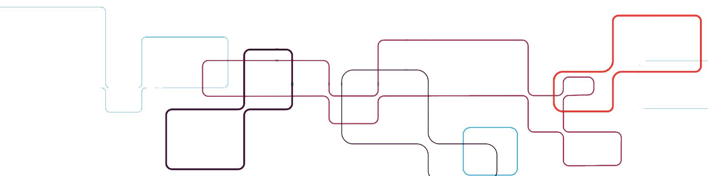

Fastly Next Generation WAF Report
©2022 Fastly, Inc. | Confidential | fastly.com
The Next-Gen WAF Report provides a high-level view of your Corp and Top Sites which see the most traffic, which sites are attacked the most, which sites are seeing the most blocked traffic and which sites we are identifying the most flagged, malicious IPs for. In addition to high-level stats, the Next-Gen WAF Report also provides a view into attack types, and their source, which helps enable your security team to understand better how your services are being attacked and the direction you should take to mitigate them.
| Country | Country Code | Attacks |
|---|
Attack map, also known as a cyber attack map, is a visual representation of the source and destination country locations around the world generating attack traffic. It is based on real-time application layer security analysis of attack Signals we analyze and identify coming from specific countries over the last 90 days for your corp/sites.
This chart shows you the total number of requests over the previous 90 days. Here we can compare the number of attack vs blocked requests compared to the overall number of requests that your entire Corp has handled.
These are the Top 4 Sites/Workspaces in your Corp that have blocked requests. This will include requests that have been blocked by System Alerts, Request Rules, Rate Limit Rules, and Templated Rules.
These are the top sites that have sent the most attack traffic. Attack traffic is considered to be the following signals: CMDEXE, Traversal, Backdoor, Attack Tooling, SQLI, and XSS. The default threshold for these attack signals is 50 in 1 minute. It is recommended to reduce this threshold if the application is extremely vulnerable. In some cases, it might be necessary to block these requests immediately, which can be done with a Request Rule.
These sites are seeing the most CVE signals. The CVE Templated Rules should be enabled in order to see data in this graph. It is recommended to turn on CVE rules to virtually patch the applications in your environment. Turning on non-relevant CVE rules is not recommended.
Logins and Registration signals will allow you to see whether account takeover attacks have occurred. If you see a spike in Login Failure vs Success, that could indicate a cred stuffing attempt. It is recommended to turn on as many ATO Templated Rules as possible for visibility.
Anomaly Signals indicate an abnormal request, for example, the No Content-Type signal indicates the Content-Type header value is missing. This does not mean the request is an attack, but something that may need attention.
Corp Signals are signals created by individual users that have access to the Next-Gen WAF. These custom signals can be used in a Request Rule to identify requests with request header or body values.
Increase account security by removing access for all inactive users.
In order to avoid unnecessary access to the sensitive information on your Next-Gen WAF, it's best to audit the users that have access to the application, but haven't logged in yet. For those who may not need access to the product, it is recommended to remove their access.
| Role | Status |
|---|
Please review any Corp 'Allow' Rules as they take precedence
Allow rules permit traffic that is explicitly allowed. Allow rules take precedence over block rules, regardless of whether they were created at the corp or site level. Allow/Block Precedence